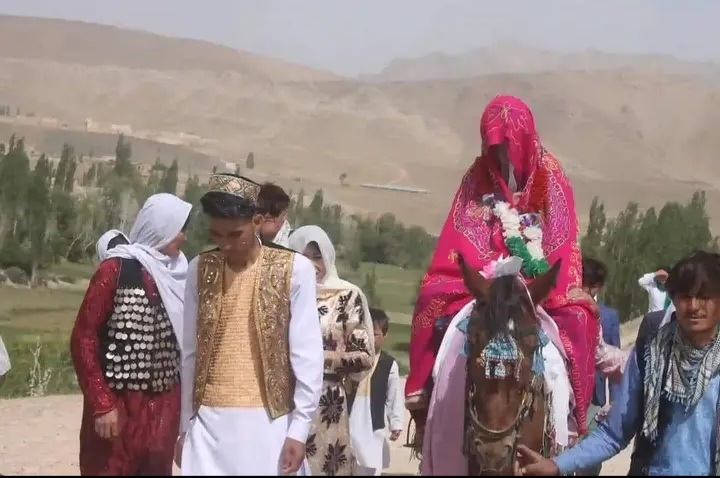
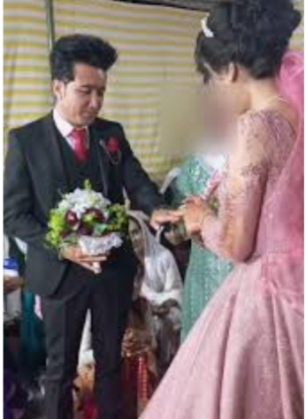

تصاویر مراسم عروسی



در جاغوری، مراسم عروسی با رسم و رسوم خاصی برگزار میشود که از گذشتههای دور به جا ماندهاند.
نامزدی اولین مرحله ازدواج در جاغوری است که با توافق خانوادهها انجام میشود.
مراسم عقد معمولاً در حضور بزرگان خانواده و اقوام برگزار میشود.
این مراسم با حضور دوستان و خانواده همراه با موسیقی سنتی برگزار میشود.